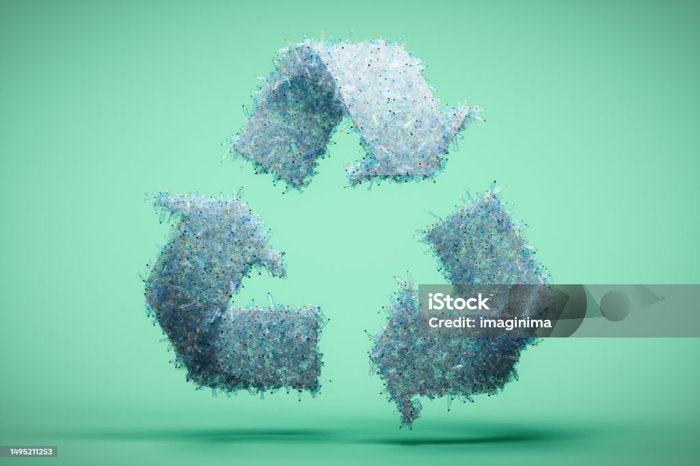
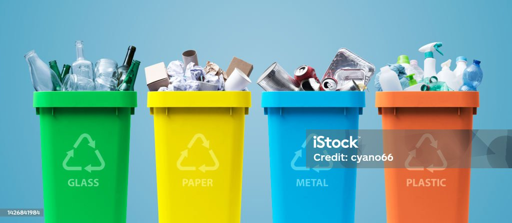

The primary objective of this project is to develop and implement a comprehensive plastic waste management system that addresses the aforementioned issues. The project will focus on:
Expected Outcomes:
By the end of the project, it is anticipated that:
Target Audience: The project will engage with various stakeholders including local communities, schools, businesses, waste management authorities, environmental NGOs, and governmental agencies to achieve its objectives.
Reduce Plastic Bottle Usage:
The most effective way to mitigate plastic bottle waste is to reduce consumption. Encouraging the use of reusable water bottles or alternative packaging materials reduces the demand for single-use plastic bottles.
Promote Recycling Programs:
Establishing and promoting robust recycling programs incentivizes individuals and businesses to recycle plastic bottles. This includes providing convenient recycling bins, educating the public on what can be recycled, and collaborating with recycling facilities for effective processing.
Implement Deposit Refund Systems:
Explanation:
Deposit refund systems involve consumers paying a small deposit when purchasing a plastic bottle, which is refunded when the bottle is returned for recycling. This approach incentivizes recycling and reduces littering.
Support Extended Producer Responsibility (EPR):
EPR policies hold manufacturers responsible for the collection, recycling, and disposal of their products, including plastic bottles. This encourages manufacturers to design bottles that are easier to recycle and invest in recycling infrastructure.
Encourage Eco-Friendly Alternatives:
Promote the use of eco-friendly alternatives such as compostable or biodegradable bottles made from renewable materials. These alternatives have a reduced environmental impact compared to traditional plastic bottles.
Educational Campaigns and Awareness Programs:
Educate consumers about the environmental impact of plastic bottles and the importance of recycling through campaigns in schools, communities, and online platforms. Raise awareness about proper disposal methods and the benefits of reducing plastic waste.
Innovative Technologies for Recycling:
Invest in and deploy advanced recycling technologies that can efficiently process plastic bottles into reusable materials. Technologies like chemical recycling and mechanical recycling improve the quality and yield of recycled plastics.
Encourage Corporate Responsibility:
Engage businesses and corporations to adopt sustainable practices, such as using recycled content in their products, reducing packaging waste, and supporting recycling initiatives in their supply chains.
Policy and Regulation:
Advocate for and support policies and regulations that promote sustainable plastic bottle management, including bans or restrictions on single-use plastics, mandatory recycling targets, and incentives for using recycled materials in manufacturing.
Public and Private Partnerships:
Foster collaborations between government entities, private businesses, NGOs, and community organizations to develop comprehensive solutions for plastic bottle waste management. Pool resources, expertise, and networks to implement effective strategies.
Benefits of these Solutions:
Environmental Impact: Reducing plastic bottle waste reduces pollution of land, waterways, and oceans, preserving ecosystems and wildlife.
Resource Conservation: Recycling plastic bottles conserves natural resources and reduces energy consumption compared to producing new plastics.
Public Health:Mitigating plastic bottle waste improves public health by reducing exposure to harmful chemicals and pollutants associated with plastic degradation.
Challenges:
Behavioral Change: Overcoming consumer habits and preferences for convenience.
Infrastructure and Technology: Ensuring adequate recycling infrastructure and technological advancements for efficient recycling.
Policy Implementation: Enforcing and monitoring policies to ensure compliance and effectiveness.
RELATED VIEWS OF HOW TO MAINTAIN THE ENVIRONMENT TO MAKE IT SUSTAINABLE
